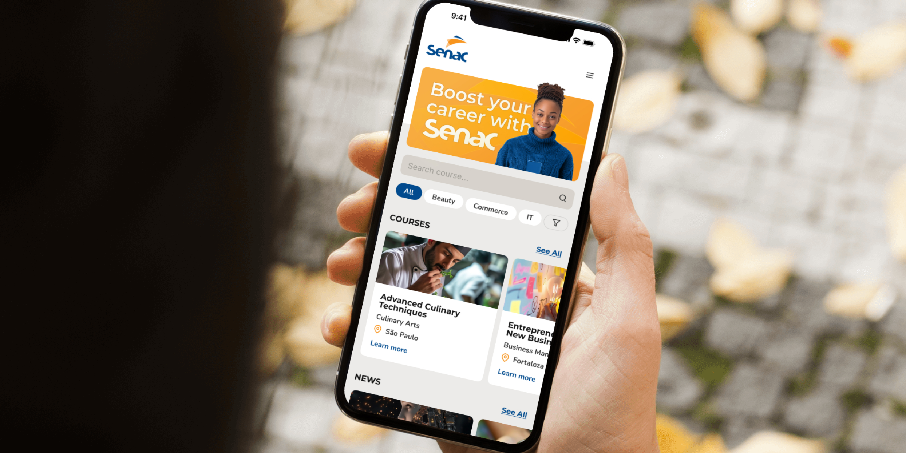
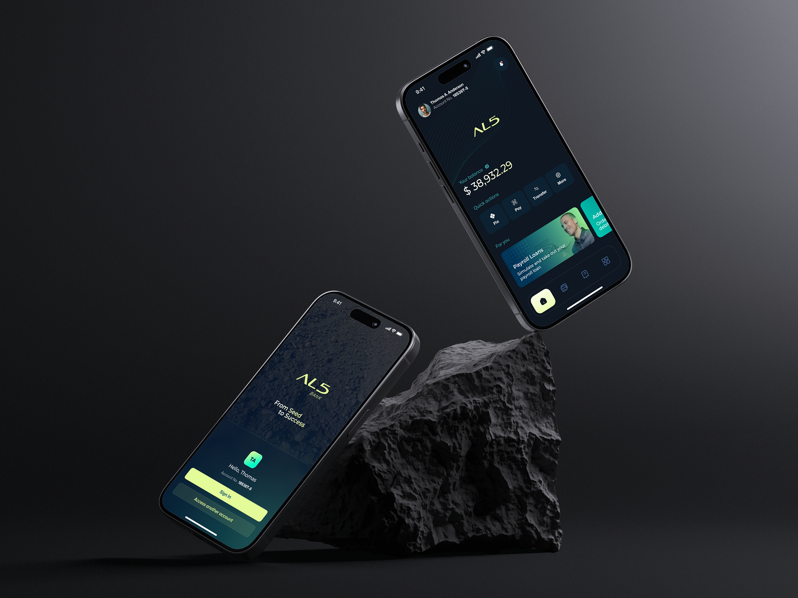

Senac
Digital transformation of an enrollment process Transformação digital de um processo de matrícula
An online enrollment platform that eased in-person overcrowding and brought consistency to student registration across Brazil's 28 states. Uma plataforma de matrícula online que reduziu a superlotação presencial e trouxe consistência ao cadastro de alunos nos 28 estados do Brasil.

Enrollment depended on in-person offices, with no consistent process across the country. A matrícula dependia de unidades presenciais, sem um processo consistente em todo o país.
Senac is one of Brazil's largest education institutions, enrolling students nationwide. Its in-person model meant overcrowding, long waits, and a process that varied from state to state. The goal: make it easy for students to find and enroll in courses online, while standardizing a process that had no single, consistent form across the country. O Senac é uma das maiores instituições de educação do Brasil, com matrículas em todo o país. O modelo presencial significava superlotação, longas esperas e um processo que variava de estado para estado. O objetivo: tornar fácil para o aluno encontrar e se matricular em cursos online, padronizando um processo que não tinha um formato único em todo o país.
As Lead Designer, I owned research, design direction, and the design system, from exploratory field research and interviews through high-fidelity prototyping, moderated testing, and iteration. Como Lead Designer, conduzi a pesquisa, a direção de design e o design system, da pesquisa de campo exploratória e das entrevistas aos protótipos de alta fidelidade, aos testes moderados e à iteração.
ResearchPesquisa
I ran exploratory research, shadowing the enrollment process firsthand to identify the pain points of Senac's secretaries, and interviewing students to understand their real experience of enrolling. Conduzi pesquisa exploratória, observando o processo de matrícula de perto para identificar as dores das secretárias do Senac, e entrevistei alunos para entender a experiência real de se matricular.
Key findingsPrincipais achados
-
01
Time constraints.Restrição de tempo. Senac's office hours clashed with students' work schedules, making enrollment hard. O horário das unidades conflitava com a jornada de trabalho dos alunos, dificultando a matrícula.
-
02
Technology limitations.Limitação de tecnologia. Many students had no computer at home and had to travel to a Senac office to enroll. Muitos alunos não tinham computador em casa e precisavam ir a uma unidade para se matricular.
-
03
No process consistency.Falta de consistência. Standardizing registration across Brazil's 28 states, each with different requirements, was the central challenge. Padronizar o cadastro nos 28 estados do Brasil, cada um com requisitos diferentes, era o desafio central.
Design decisionsDecisões de design
The redesign tackled the technical and usability issues through focused design and content strategy. Direction came from extensive ideation, leaning on Senac's existing intelligence technologies to deliver smart, scalable solutions. I prototyped in Figma, building a design library grounded in Senac's brand guidelines so the platform felt native to the institution. O redesign atacou os problemas técnicos e de usabilidade por meio de design e estratégia de conteúdo focados. A direção veio de uma ideação extensa, apoiada nas tecnologias de inteligência já existentes no Senac para entregar soluções inteligentes e escaláveis. Prototipei no Figma, construindo uma design library baseada nas diretrizes de marca do Senac, para a plataforma parecer nativa à instituição.

Testing & iterationTestes e iteração
Moderated testing with 10 students across two rounds surfaced clear usability improvements. Iteration focused on simplifying the web app's copy to remove jargon and resolving the remaining friction points. Testes moderados com 10 alunos, em duas rodadas, revelaram melhorias claras de usabilidade. A iteração focou em simplificar o texto do web app para remover jargão e resolver os atritos restantes.
Senac launched a campaign to introduce the new online option. With no prior platform there was no baseline to compare, but the in-person offices saw noticeably smaller crowds. It eased administrative work immediately and was adopted quickly, widening access for Brazil's adult learners. O Senac lançou uma campanha para apresentar a nova opção online. Sem plataforma anterior, não havia base de comparação, mas as unidades presenciais viram filas visivelmente menores. Aliviou o trabalho administrativo de imediato e teve adoção rápida, ampliando o acesso para o público adulto do Brasil.
Designing for an audience with uneven access to technology was the real lesson: the best flow is worthless if your users can't reach it. Meeting people across very different contexts, and 28 different state requirements, is what made this a design problem worth solving. Desenhar para um público com acesso desigual à tecnologia foi a verdadeira lição: o melhor fluxo não vale nada se o usuário não consegue chegar até ele. Atender pessoas em contextos muito diferentes, e 28 requisitos estaduais distintos, foi o que fez deste um problema de design que valia a pena resolver.